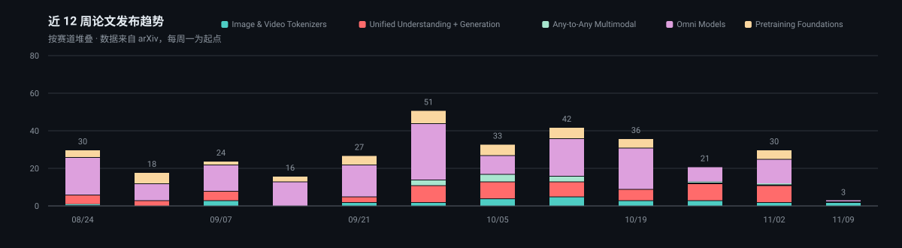
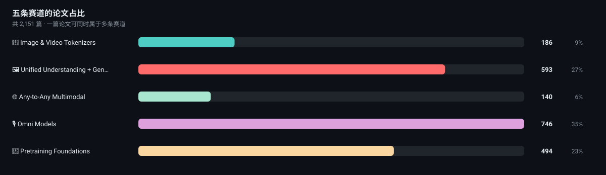

🤖 Awesome Native
Multimodal Models
每天从 arXiv 抓取、打分、归类。覆盖从 2017 VQ-VAE 到今天的 tokenizer / 统一理解+生成 / Any-to-Any / Omni / 预训练底座。 精选谱系与时间线仍由人工目录驱动，长尾新论文由自动跟踪补上。
动态趋势 近 12 周 · 来自 data/papers.json


按年覆盖 2017 地基 → 今天
五条赛道 点进去按赛道浏览自动跟踪论文
图像与视频分词器
统一理解与生成
任意到任意
Omni 实时交互
预训练底座
Landmark 人工精选，点进 arXiv
高分新作
近 45 天 · 按相关分排序，过滤掉只是沾边的标题
仓库雷达
按 7 日增速（不足 7 天快照则用日均折算）

Fast, accurate OCR with correctness assessment.
See, hear, and interact on your local devices.
Qwen3-VL is the multimodal large language model series developed by Qwen team, Alibaba Cloud.
Janus-Series: Unified Multimodal Understanding and Generation Models
A framework for efficient model inference with omni-modality models
CLIP (Contrastive Language-Image Pretraining), Predict the most relevant text snippet given an image
🎙️ A 0.1B Omni model trained from scratch, capable of listening, speaking, and seeing!
Use PEFT or Full-parameter to CPT/SFT/DPO/GRPO 600+ LLMs (Qwen3.8, DeepSeek-V4, GLM-5.1, InternLM3, Llama4, ..
精选地图 人工目录，不含自动跟踪长尾
Architecture Taxonomy
Hierarchical D3.js collapsible tree — 5 primary branches, 12+ sub-categories, 100+ leaf models. Search, expand, hover for paper links.
Interactive 📅Model Timeline
Swim-lane timeline from 2017 to 2026. Zoom, pan, category filters, year jump, landmark highlighting.
A native multimodal model processes multiple modalities through shared computation paths (not separate encoders bridged by adapters), unified tokenization (all modalities in a common token space), and end-to-end cross-modal training — as opposed to modular "adapter" architectures like LLaVA or InstructBLIP.